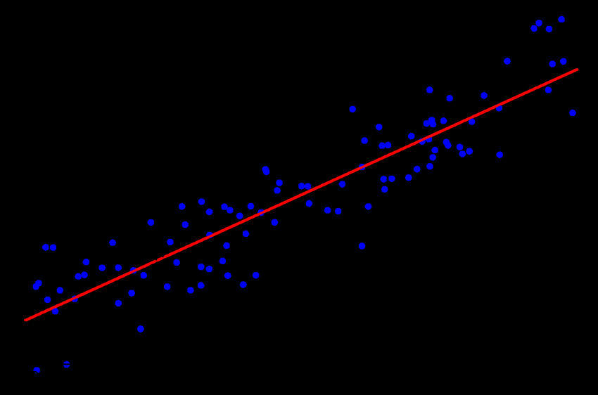
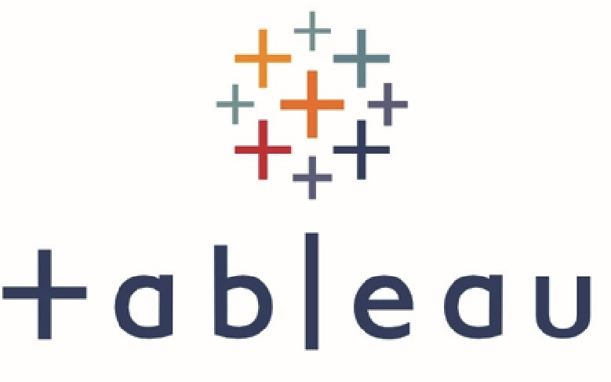

Hi, My name is Sanjay Pandey, an Mba passout in Financial Engineering, A Data Enthusiast Kind of
an Inner Join() Between Finance and Technology. Posses Domain Knowledge in various financial
products. This Website is a sample of things which i'am really intrested in.


This project is in search of the following questions
Relationship between price movement and google searches.
Is there Any Correlation between price and volume.
Any past trend in Google seaches about the stock

This is a simple linear regression model in which i have tried to find out the relationship
between two indices DOW JONES and NIFTY 50 so that it can help to trade nifty by taking
reference from dow jones.
The question i'm trying to answer is -Does the explanatory variable(Dow jones) do a good job at
predicting the dependent variable(Nifty 50).
This project in about comparing two same asset class in a parameter called 'Sharpe Ratio'. In
finance, the Sharpe ratio (also known as the Sharpe index, the Sharpe measure, and the
reward-to-variability ratio) measures the performance of an investment such as a security or
portfolio compared to a risk-free asset, after adjusting for its risk.

Tableau Dashboards for projects on COVID 19, Sales Analysis.

Various Data analysis projects mostly related to sales.

EDA, Cleaning, Filtering, sorting etc. in MicrosoftSQLserver .